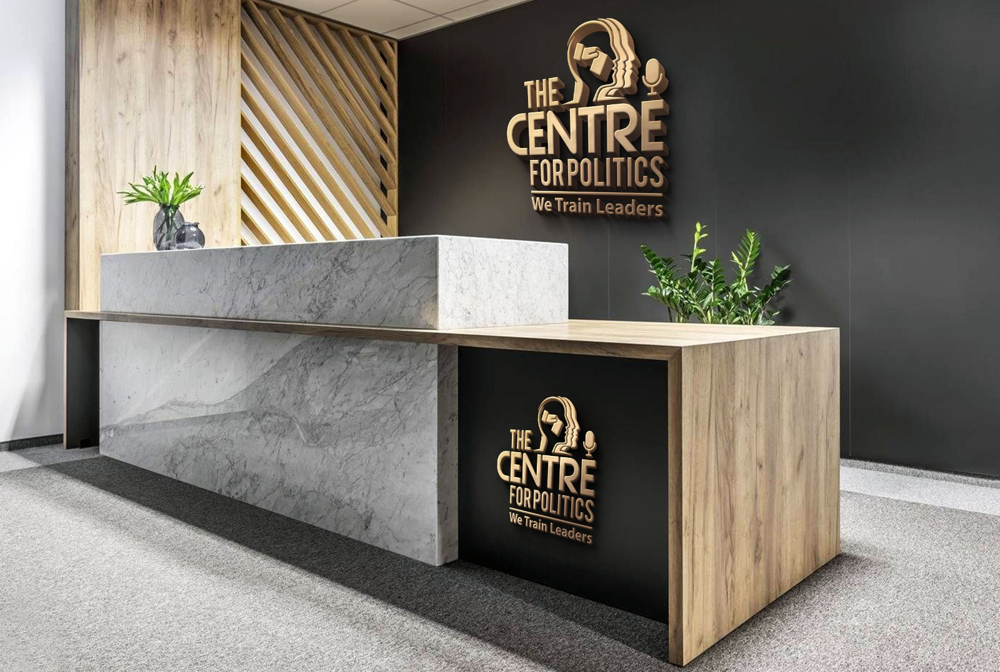
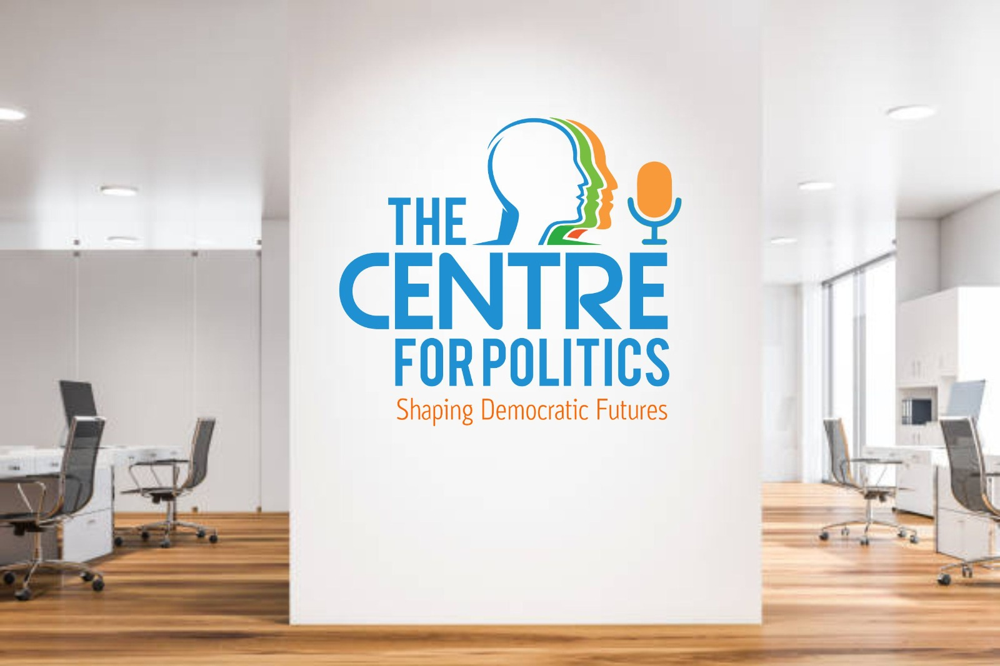

Redefining Politics as a Professional Field
The Centre for Politics (TCP) was established with a clear conviction: politics is not merely about contesting elections or holding public office. It is a vast, multifaceted professional field encompassing public leadership, governance, policymaking, political communication, election management, grassroots mobilisation, research, and public affairs.
India has millions of people who aspire to contribute to public life, but there are very few structured platforms that provide them with the knowledge, practical skills, strategic understanding and mentorship required to succeed.
The Centre for Politics aims to bridge this gap by creating a professional ecosystem for political education, leadership development and career advancement.
Our Core Philosophy
"Politics needs trained leaders, informed citizens and professionally equipped institutions."
Our Vision
To become India's leading institution for political education, leadership development and professional advancement in the field of politics and public affairs.
Our Mission
- To professionalise political education and leadership training in India.
- To prepare competent, ethical, and responsible future political leaders.
- To develop expertise in election management and political strategy.
- To encourage informed public participation and democratic engagement.
- To create structured career pathways for young people in governance.
- To provide practical knowledge through experienced mentors.
Institutional Credentials
Operating as an independent, legally compliant professional educational institution.
GST Registered
Officially registered under Goods and Services Tax laws of the Government of India.
MSME Registered
Recognised Micro, Small & Medium Enterprise dedicated to educational advancement.
Trademark Application
Proprietary brand identity and curriculum protected under Indian intellectual property laws.
The Centre for Politics Headquarters
Located in DLF Phase 5, Sector 54, Gurugram, our campus provides executive-grade spaces for training, simulations, and confidential consultations.

